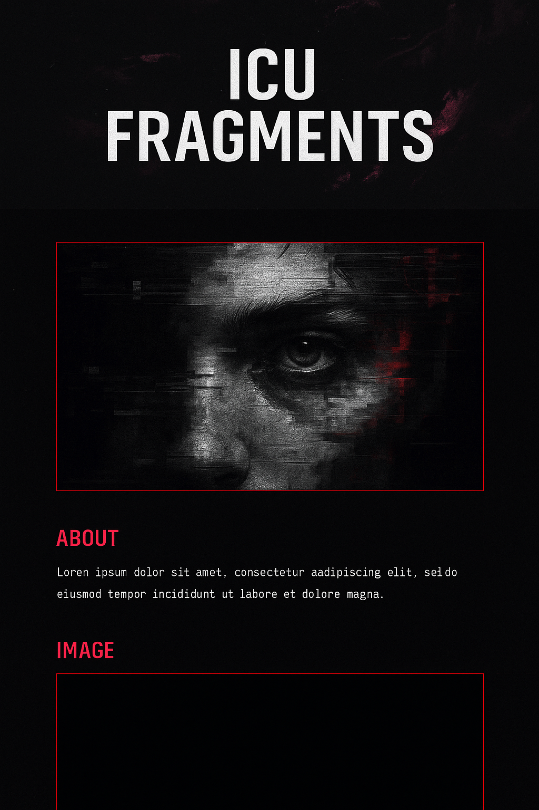

Visual Noise. Digital Fragments. Abstract Truth.
ICU Fragments is an exploration of the modern world through glitch, shadow, and digital surrealism. What you see is never whole. What you feel is never fake.
Featured Fragment
Follow the Vision
Twitter/X: @ICUFragments